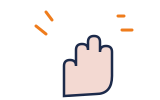
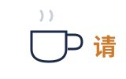
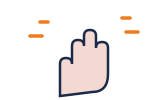

01见面 · Saying hello你好
你好！Nǐ hǎo — 最常用的打招呼。
Hello! Works with almost anyone, anywhere.
សួស្តី! ប្រើបានជិតគ្រប់កន្លែង។
Greetings & Introductions — speak on day one · Meet someone, say your name, leave politely
A first meeting in Chinese is a fixed little dance of five moves. Learn one line per move and you can hold the whole conversation — no grammar needed yet.

再见 / 明天见Bye, or the friendlier 'see you tomorrow'
请One word offers, invites and softensGreet → ask the name → answer about yourself → say nice to meet you → part politely. One conversation, in order.
Space listen · ← → move · K show text
你好！Nǐ hǎo — 最常用的打招呼。
Hello! Works with almost anyone, anywhere.
សួស្តី! ប្រើបានជិតគ្រប់កន្លែង។
对长辈、客户说：您好！Nín hǎo。
Say 您好 (nín hǎo) to elders, teachers and customers — it carries respect.
ចំពោះ មនុស្សចាស់ គ្រូ ឬ អតិថិជន៖ ជម្រាបសួរ។
你好吗？Nǐ hǎo ma — 问别人怎么样。
How are you? A real question, but friends often skip it.
តើ អ្នក សុខសប្បាយ ទេ?
我叫 + 名字：我叫 Dara。
'My name is …' — literally 'I am-called Dara'. Put your name right after 叫.
ខ្ញុំ ឈ្មោះ តារា។
请问，你叫什么名字？Qǐng wèn…
'May I ask your name?' — start with 请问 to sound polite.
សុំ ទោស តើ អ្នក ឈ្មោះ អ្វី?
我很好，谢谢。Wǒ hěn hǎo, xiè xie.
I'm very well, thank you — the standard bright answer.
ខ្ញុំ សុខសប្បាយ អរគុណ។
很高兴认识你！Hěn gāoxìng rènshi nǐ.
Nice to meet you! Say it right after names are exchanged.
រីករាយ ដែល បាន ស្គាល់ គ្នា!

再见！Zàijiàn — 或者更自然：明天见！
Goodbye! Even more natural with people you'll see again: 'See you tomorrow'.
លា ហើយ! ឬ៖ ជួប គ្នា សែក!
请坐，请喝茶，请先走 — 一个“请”走遍中国。
Please sit, please have tea, after you — one 请 softens everything.
សូម អង្គុយ សូម ផឹក តែ សូម ទៅ មុន។
别人帮你：谢谢！他说：不客气。
Someone helps: xiè xie (thank you). The reply is 不客气 — 'you're welcome'.
អរគុណ! ចម្លើយ៖ មិន អី ទេ។
Phrases follow HSK-1 / Yoyo Chinese Beginner Courses Glossary (cdn.yoyochinese.com, verified 2026-11-09). Khmer support checked against the Wikivoyage Khmer phrasebook.
Recall the answer in your head first, then tap to check and listen.
长辈、老师、客户、第一次见的客人。朋友用你。
Elders, teachers, customers, guests you just met. With friends, plain 你.
មនុស្សចាស់ គ្រូ អតិថិជន។ ជាមួយ មិត្ត ប្រើ nǐ។
One syllable buys you real goodwill. When unsure, 您 is the safer mistake.
不是，那只是打招呼。回答：吃了，你呢？
No — it's just a greeting among friends. Answer: 吃了，你呢? (Yes, and you?)
មិន មែន ទេ — នេះ គ្រាន់ តែ សំណូម ពរ ប៉ុណ្ណោះ។ ឆ្លើយ៖ បរិភោគ រួច ហើយ។
电话里说“喂”（wéi），然后说自己是谁。
On the phone Chinese says 喂 (wéi), then your own name — not 你好.
ពេល ទូរស័ព្ទ គេ និយាយ wéi ហើយ ប្រាប់ ឈ្មោះ ខ្លួន។
Textbooks teach 你好; real phones start with wéi. Knowing this instantly sounds natural.
我叫 Dara。你呢？
My name is Dara. And you?
ខ្ញុំ ឈ្មោះ តារា។ អ្នកវិញ?
他是我朋友，他叫 Sok。
He's my friend. His name is Sok.
គាត់ ជា មិត្ត ខ្ញុំ ឈ្មោះ សុខ។
我也很高兴认识你。
I'm also very glad to meet you.
ខ្ញុំ ក៏ រីករាយ ដែល បាន ស្គាល់ គ្នា ដែរ។
តើ អ្នក និយាយ ភាសា អង់គ្លេស ទេ?
សូម និយាយ ម្តង ទៀត។
ខ្ញុំ ត្រូវ ទៅ ហើយ លា ហើយ!
他叫 Sok。她叫 Malis。
He's called Sok. She's called Malis.
គាត់ ឈ្មោះ សុខ។ នាង ឈ្មោះ មាលីស។
他是老师。我们是朋友。
He is a teacher. We are friends. 是 never conjugates.
គាត់ ជា គ្រូ។ យើង ជា មិត្ត។
我很好，你呢？——我也很好。
I'm well — and you? — I'm well too.
ខ្ញុំ សុខសប្បាយ អ្នកវិញ? — ខ្ញុំ ក៏ ដូចគ្នា។
Tap a word's play button to hear it. Hide one side, then recall it before you tap to check.
你好！Nǐ hǎo — 最常用的打招呼。 对长辈、客户说：您好！Nín hǎo。 你好吗？Nǐ hǎo ma — 问别人怎么样。
Hello! Works with almost anyone, anywhere. Say 您好 (nín hǎo) to elders, teachers and customers — it carries respect. How are you? A real question, but friends often skip it.
我叫 + 名字：我叫 Dara。 请问，你叫什么名字？Qǐng wèn…
'My name is …' — literally 'I am-called Dara'. Put your name right after 叫. 'May I ask your name?' — start with 请问 to sound polite.
我很好，谢谢。Wǒ hěn hǎo, xiè xie. 很高兴认识你！Hěn gāoxìng rènshi nǐ.
I'm very well, thank you — the standard bright answer. Nice to meet you! Say it right after names are exchanged.
再见！Zàijiàn — 或者更自然：明天见！
Goodbye! Even more natural with people you'll see again: 'See you tomorrow'.
请坐，请喝茶，请先走 — 一个“请”走遍中国。 别人帮你：谢谢！他说：不客气。
Please sit, please have tea, after you — one 请 softens everything. Someone helps: xiè xie (thank you). The reply is 不客气 — 'you're welcome'.
Q. 什么时候用“您”？
Q. When do I use the polite 您?
A. 长辈、老师、客户、第一次见的客人。朋友用你。
A. Elders, teachers, customers, guests you just met. With friends, plain 你.
មនុស្សចាស់ គ្រូ អតិថិជន។ ជាមួយ មិត្ត ប្រើ nǐ។
Q. “吃了吗？”是要请我吃饭吗？
Q. Is 'Have you eaten?' an invitation to dinner?
A. 不是，那只是打招呼。回答：吃了，你呢？
A. No — it's just a greeting among friends. Answer: 吃了，你呢? (Yes, and you?)
មិន មែន ទេ — នេះ គ្រាន់ តែ សំណូម ពរ ប៉ុណ្ណោះ។ ឆ្លើយ៖ បរិភោគ រួច ហើយ។
Q. 打电话第一句说什么？
Q. What do I say first on a phone call?
A. 电话里说“喂”（wéi），然后说自己是谁。
A. On the phone Chinese says 喂 (wéi), then your own name — not 你好.
ពេល ទូរស័ព្ទ គេ និយាយ wéi ហើយ ប្រាប់ ឈ្មោះ ខ្លួន។
Q. 你叫什么名字？
Q. What's your name?
A. 我叫 Dara。你呢？
A. My name is Dara. And you?
ខ្ញុំ ឈ្មោះ តារា។ អ្នកវិញ?
Q. 他是谁？
Q. Who is he?
A. 他是我朋友，他叫 Sok。
A. He's my friend. His name is Sok.
គាត់ ជា មិត្ត ខ្ញុំ ឈ្មោះ សុខ។
Q. 认识你很高兴。
Q. Nice to meet you. (they say it first)
A. 我也很高兴认识你。
A. I'm also very glad to meet you.
ខ្ញុំ ក៏ រីករាយ ដែល បាន ស្គាល់ គ្នា ដែរ។
你会说英语吗？
Do you speak English?
请再说一遍。
Please say that again.
我先走了，再见！
I have to go now — goodbye!
문G. 我叫 Dara。
문G. Pattern: 我叫 + name — 'I am called …'
A. 他叫 Sok。她叫 Malis。
A. He's called Sok. She's called Malis.
គាត់ ឈ្មោះ សុខ។ នាង ឈ្មោះ មាលីស។
문G. 我是学生。
문G. Pattern: 我是 + thing — 'I am a …' (no verb change)
A. 他是老师。我们是朋友。
A. He is a teacher. We are friends. 是 never conjugates.
គាត់ ជា គ្រូ។ យើង ជា មិត្ត។
문G. 你呢？
문G. Pattern: X 呢? = 'And X?' — the fastest way to bounce a question back.
A. 我很好，你呢？——我也很好。
A. I'm well — and you? — I'm well too.
ខ្ញុំ សុខសប្បាយ អ្នកវិញ? — ខ្ញុំ ក៏ ដូចគ្នា។
Phrases follow HSK-1 / Yoyo Chinese Beginner Courses Glossary (cdn.yoyochinese.com, verified 2026-11-09). Khmer support checked against the Wikivoyage Khmer phrasebook.
Say it in your head first, then tap the box to check.